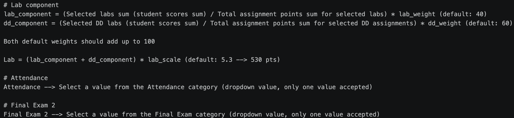

The walkthrough covers the full workflow: From signing in with your CRN and uploading a Canvas CSV, to reviewing column selections and downloading the normalized grade output.
Grade Normalizer takes a raw Canvas gradebook export and produces four normalized columns: Lab, Attendance, Debug Dungeon and Final Exam 2 which are ready to paste into a grade sheet. The five step workflow is designed to be fast for repeated use(s): preferences and formula weights are saved per CRN so processing another CSV files requires no reconfiguration.
Register a new CRN profile, Login to an existing one, or Continue as Guest for one time use without saving anything.
Customize the keyword rules used to assign CSV columns to grade buckets. Built-in defaults cover most standard Canvas naming conventions and are saved per CRN.
Adjust the 8 calculation weights for your course: lab weight, Debug Dungeon weight, multipliers, and fallback denominators. Any field left blank falls back to the built-in default(s). See below picture for more information on how these are factored in.
Export your gradebook from Canvas and convert it into a CSV file, then drag the .csv file into the upload area or click to browse.
Review the auto-categorized columns. Check the Labs and Debug Dungeon columns, choose the Attendance and Final Exam columns from the dropdowns, then click Save & Calculate Grades OR Debug Normalize for more information on the calculation.
Denominators are read dynamically from the Canvas "Points Possible" row and fall back to the configurable fallback values when that row is absent. Below explains the Normalization formula we use:

Extra credit columns are placed in the Labs category and added to the numerator. Because Canvas sets their Points Possible to 0, they do not affect the denominator (scores can therefore exceed 100%, which is intentional).